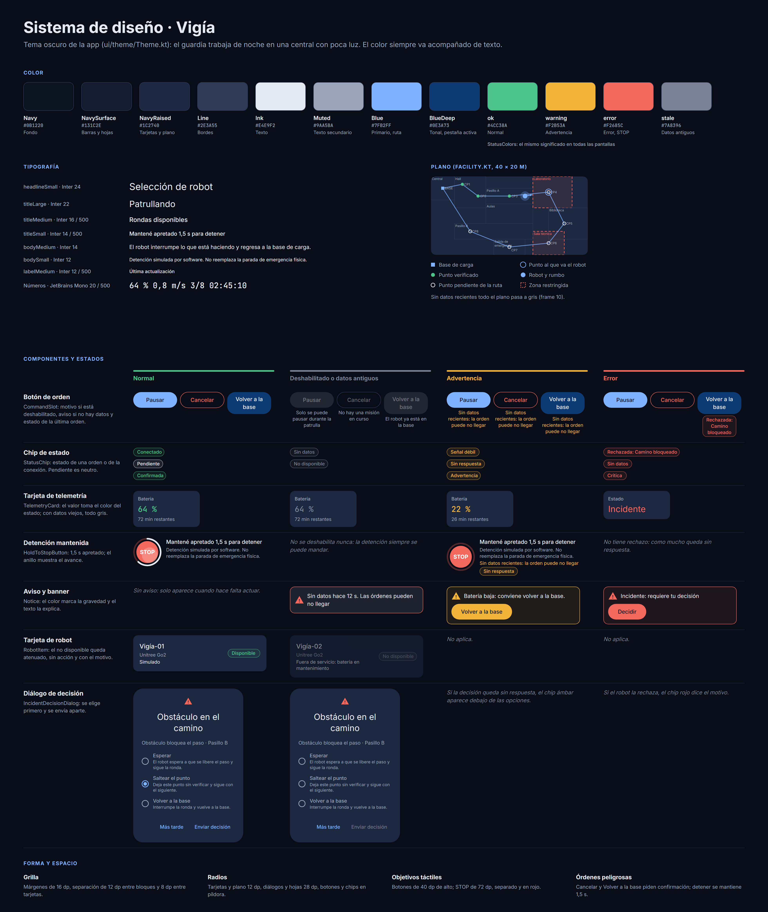
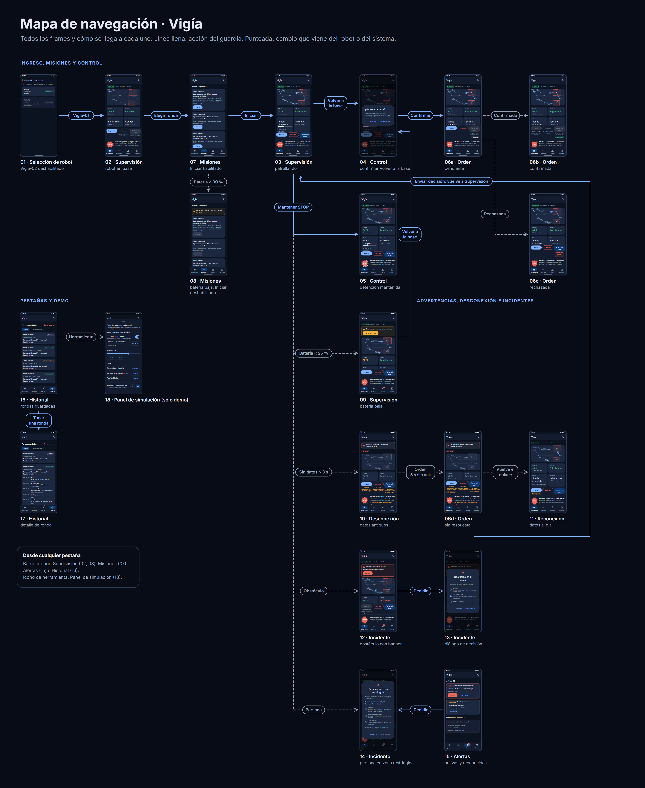
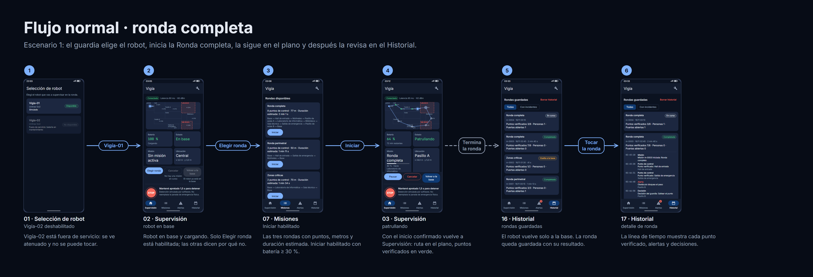
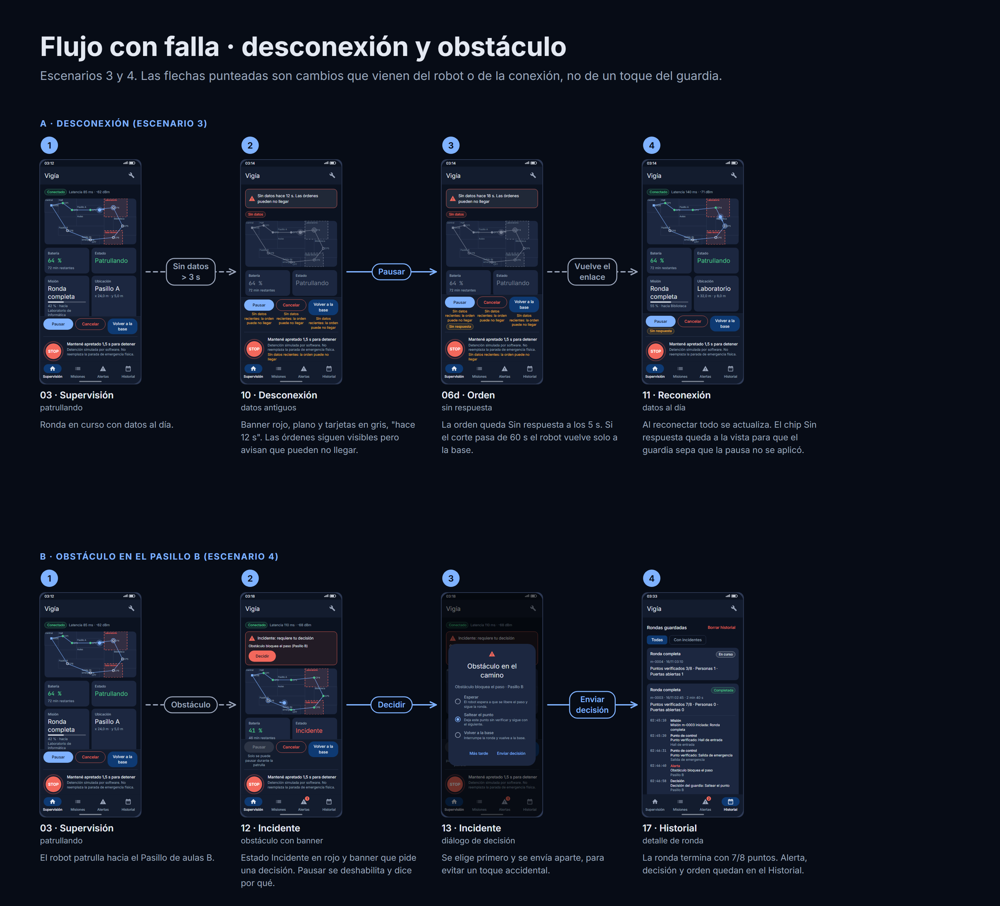

Sistema de diseño

Mapa de navegación

Flujo normal

Flujo con falla

A · Ingreso

Vigía-02 se ve atenuado y con el motivo escrito. No se puede tocar, así el guardia no elige un robot que no va a responder.
B · Supervisión

Robot en base y cargando. Solo Elegir ronda está habilitada; Cancelar y Volver a la base dicen por qué no se pueden usar.

Plano con la ruta y los puntos verificados en verde, tarjetas de telemetría y la barra de órdenes siempre abajo. La detención queda separada y en rojo.

Debajo del 25 % aparece el aviso ámbar con Volver a la base a mano, sin buscarlo en la barra.
C · Control

Volver a la base corta la ronda, por eso pide confirmación. Descartar queda a la izquierda, lejos de la acción.

La detención se mantiene apretada 1,5 s. El anillo muestra cuánto falta y al lado se aclara que es una detención simulada por software.

La orden queda Pendiente y el botón se deshabilita para no mandarla dos veces.

Confirmada quiere decir que el robot aceptó la orden. El estado pasa a Regresando y las otras órdenes explican por qué ya no aplican.

El robot rechazó la orden y el chip dice el motivo. El botón sigue habilitado para volver a intentar.

Sin acuse a los 5 s la orden queda Sin respuesta, en ámbar. Pasa durante una desconexión.
D · Misiones

Las tres rondas con puntos, metros, duración estimada y recorrido. Iniciar está habilitado porque el robot está en base con batería.

Con menos de 30 % de batería Iniciar se deshabilita en las tres rondas. El motivo aparece una sola vez arriba.
E · Desconexión

Más de 3 s sin datos: banner rojo, plano y tarjetas en gris y la antigüedad a la vista. Las órdenes siguen visibles pero avisan que pueden no llegar.

Al volver el enlace todo se actualiza. El chip Sin respuesta de la pausa queda a la vista para que el guardia sepa que no se aplicó.
F · Incidentes y alertas

El robot está detenido esperando. El banner rojo lleva directo al diálogo y Pausar explica por qué no aplica.

Cada opción dice qué va a hacer el robot. Se elige primero y se envía aparte para evitar un toque accidental.

Muestra lo que dijo el robot por el parlante y la nota de privacidad. Enviar decisión queda deshabilitado hasta elegir una opción.

Las activas van arriba, con el borde y el chip del color de la severidad. Las reconocidas y resueltas bajan y se atenúan.
G · Historial

Rondas guardadas con resultado, puntos verificados, personas y puertas. Borrar historial está en rojo y pide confirmación.

Al tocar una ronda se abre su línea de tiempo: puntos, alertas, decisiones y órdenes con su hora.